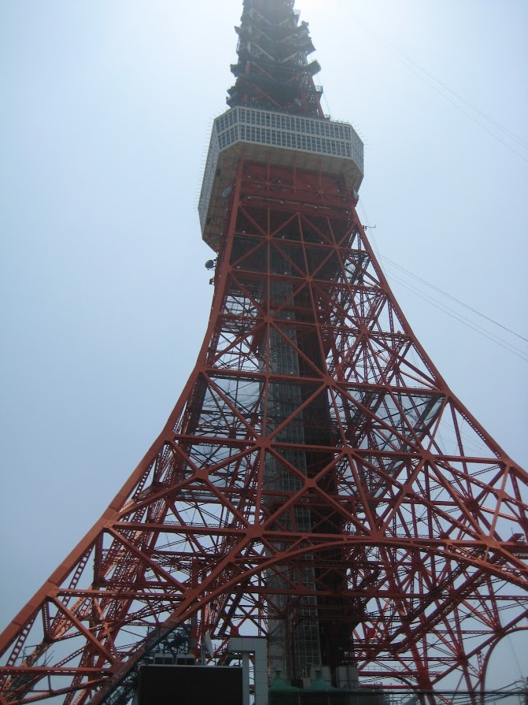

Tokyo is the capital and the largest city of Japan. The city is super busy, and yet very beautiful and clean. The city is full of tall skyscrapers and the people in Tokyo are always in hustle and bustle. The people speak Japanese and they don't speak English very well. When you walk on the street, you always feel like you walk too slow. The transportation system is exceptionally advanced and the trains can bring you to almost every corner of the city.The Japanese food is good and the people there are nice. Tokyo is very fun to visit and you don't want to miss it!